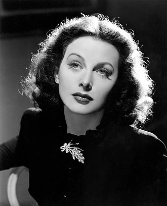

Hedy Lamarr
Date personale
S-a născut în 1914 la Viena, Austro-Ungaria ca Hedwig Eva Maria Kiesler, singurul copil al Gertrud "Trude" Kiesler (3 februarie 1894 – 27 februarie 1977) și Emil Kiesler (27 decembrie 1880 – 14 februarie 1935). Mama ei a fost o pianistă evreică nativă din Budapesta. Tatăl ei a fost un bancher de origine evreiască.
Lamarr a devenit cetățean american la 10 aprilie 1953, la vârsta de 38 de ani. În 1966, ea a fost arestată pentru furt din magazine la Los Angeles. Acuzațiile au fost retrase în cele din urmă. În 1991, ea a fost arestată pentru aceeași acuzație în Florida, de data aceasta pentru 21,48 dolari pentru laxative și picături pentru ochi. În schimbul promisiunii de a se abține de la a încălca orice lege pentru un an, acuzațiile au fost, din nou, retrase.
Cariera
A făcut parte din 30 de filme într-o carieră de actorie care a durat 28 de ani și a inventat o versiune timpurie a spectrului de răspândire a frecvențelor .

Hedy Lamarr in The Heavenly Body (1944)
Razboiul
Lamarr a dorit să se alăture Consiliului Național al Inventatorilor , dar a fost spus de membrul NIC Charles F. Kettering și alții că ar putea ajuta mai mult folosind statutul ei de celebritate pentru a vinde obligațiuni de război .
A participat la o campanie de vânzare a obligațiunilor de război cu un marinar pe nume Eddie Rhodes. În total, Lamarr a vândut aproximativ 25 de milioane de dolari în valoare de obligațiuni de război pe o perioadă de 10 zile.
Producator
După ce a părăsit MGM în 1945, Lamarr a format compania de producție Mars Film Corporation împreună cu Jack Chertok și Hunt Stromberg , producând două filme în care a jucat și: The Strange Woman (1946) și Dishonored Lady (1947). Inițiativa ei nu a fost primita de unitatea de la Hollywood, întrucât era împotriva actorilor care își produc filmele în mod independent. Ambele filme s-au realizat pe bugetele proprii, dar nu au avut succes comercial.
Inventie
La începutul celui de-al Doilea Război Mondial , Lamarr și compozitorul George Antheil au dezvoltat un sistem de ghidare radio pentru torpilele Aliate , menit să folosească tehnologia cu spectru de răspândire cu scădere a frecvenței pentru a învinge amenințarea de blocaj din partea puterilor Axei . Ea a ajutat, de asemenea, la îmbunătățirea design-urilor aviației pentru Howard Hughes. Deși Marina SUA nu a adoptat invenția lui Lamarr și Antheil până în 1957, diverse tehnici de spectru răspândit sunt încorporate în tehnologia Bluetooth și sunt similare cu metodele utilizate în versiunile vechi ale Wi-Fi .
Spectrul de răspândire a frecvențelor de sărituri
În timpul celui de-al Doilea Război Mondial , Lamarr a aflat că torpilele controlate prin radio , o tehnologie emergentă în războiul naval, pot fi ușor blocate și pornite . S-a gândit să creeze un semnal de săritură a frecvenței care nu putea fi urmărit sau blocat. Ea l-a contactat pe prietenul său, compozitorul și pianistul George Antheil , pentru a o ajuta să dezvolte un dispozitiv pentru a face asta, iar el a reușit să sincronizeze un mecanism miniaturizat de pian-player cu semnale radio. Au elaborat modele pentru sistemul de sărituri de frecvență, pe care le-au brevetat. Antheil a amintit:
Am început să vorbim despre războiul care, la sfârșitul verii 1940, părea extrem de negru. Hedy a spus că nu se simte foarte confortabil, stând acolo la Hollywood și câștigând mulți bani atunci când lucrurile erau într-o astfel de stare. Ea a spus că știe foarte multe despre muniții și diverse arme secrete ... și că se gândește serios să renunțe la MGM și să meargă la Washington, DC, pentru a-și oferi serviciile nou-înființatului Consiliului Național al Inventatorilor .
Invenția lor a primit un brevet în conformitate cu brevetul SUA 2.292.387 la 11 august 1942 (depus cu numele ei căsătorit Hedy Kiesler Markey).
Deși Lamarr nu a avut o pregătire formală și a fost în primul rând autodidactă, ea a lucrat în timpul liber la diverse hobby-uri și invenții, care au inclus un semafor îmbunătățit în trafic și o tabletă care s-ar dizolva în apă pentru a crea o băutură carbogazoasă .
Printre puținii care știau despre inventivitatea lui Lamarr era magnatul aviației Howard Hughes . Ea a sugerat să schimbe designul destul de pătrat al avioanelor sale (pe care ea a considerat-o prea lentă) într-o formă mai simplificată, pe baza imaginilor cu cele mai rapide păsări și pești pe care i-ar putea găsi.
Casatorii si copii
Lamarr a fost căsătorita de șase ori și a avut trei copii:
1. Friedrich Mandl (căsătorit 1933–37), președinte al Hirtenberger Patronen-Fabrik
2. Gene Markey (căsătorit 1939–41), scenarist și producător. Ea a adoptat un băiat, James Lamarr Markey (născut pe 9 ianuarie 1939) în timpul căsătoriei cu Markey. În 2001, James a aflat că este fiul extraconjugal al lui Lamarr și al actorului John Loder, cu care s-a căsătorit ulterior ca al treilea soț.Lamarr s-a înstrăinat de fiul ei adoptat, James Lamarr Loder, pe când avea 12 ani. Relația lor s-a încheiat brusc, iar el s-a mutat cu o altă familie. Nu au mai vorbit din nou aproape 50 de ani. Lamarr l-a lăsat pe James Loder din voia ei, iar el a dat în judecată pentru controlul asupra averii de 3,3 milioane USD, lăsată de Lamarr în 2000. În cele din urmă, s-a decontat pentru 50 000 USD.
3. John Loder (căsătorit în 1943–47), actor. James Lamarr Markey a fost adoptat de Loder ca James Lamarr Loder. Căsătoria a produs și doi copii biologici: Denise Loder (născută la 19 ianuarie 1945), s-a căsătorit cu Larry Colton , scriitoare și fost jucătoare de baseball; și Anthony Loder (născut la 1 februarie 1947) s-a căsătorit cu Roxanne care a lucrat pentru ilustratorul James McMullan . Amândoi au apărut în filmele documentare Calling Hedy Lamarr (2004) , și Bombshell: The Hedy Lamarr Story (2017).
4. Ernest "Ted" Stauffer (căsătorit în 1951–52), proprietar al clubului de noapte, restaurator și fost lider de bandă
5. W. Howard Lee (căsătorit în 1953–60), un om petrolier din Texas (s-a căsătorit ulterior cu actrița de film Gene Tierney )
6. Lewis J. Boies (căsătorit 1963–65), avocat de divorț al lui Lamarr
În urma celui de-al șaselea și ultimul divorț din 1965, Lamarr a rămas necăsătorită în ultimii 35 de ani din viață.
Moartea
Lamarr a murit la Casselberry, Florida, la 19 ianuarie 2000, la vârsta de 85 de ani. Certificatul ei de deces citează trei cauze: insuficiență cardiacă, boli cronice de inimă valvulară și boli de inima aterosclerotice. Moartea ei a coincis cu împlinirea vârstei de 55 de ani a fiicei ei, Denise. Fiul ei Anthony Loder i-a luat cenușa și a răspândit-o în Pădurile Vienei, în conformitate cu ultimele ei dorințe.

A Lady Without Passport, 1950
Copy of U.S. patent for "Secret Communication System"
Hedy Lamarr in Dishonored Lady (1947)
 Activit.
Activit. Galerie
Galerie Sus
Sus